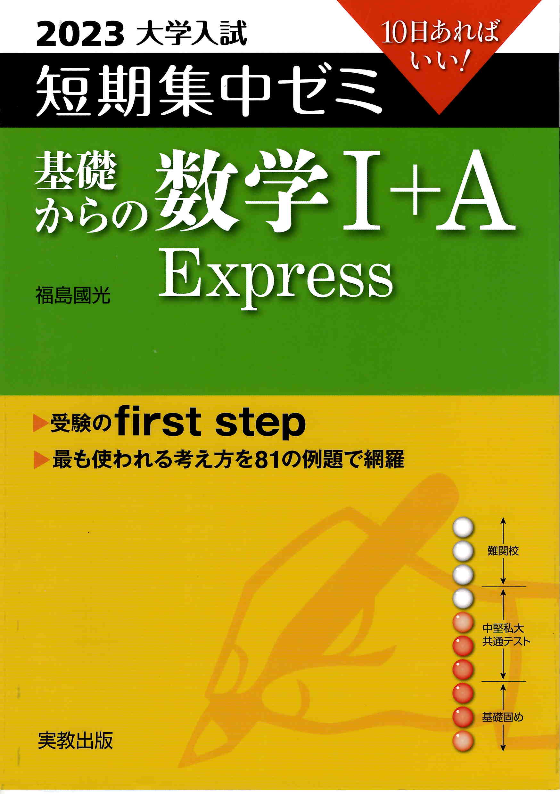

← ポータルに戻る
短期集中ゼミ 基礎からの数学I+A
全152ページ

数と式
p.4–13
▶
1
公式による展開
p.4
2
式の計算
p.5
3
因数分解
p.6
4
おきかえによる因数分解
p.7
5
無理数の計算
p.8
6
対称式の計算
p.9
7
二重根号のはずし方
p.10
8
無理数の整数部分と小数部分
p.11
9
3元連立方程式
p.12
10
絶対値記号とそのはずし方
p.13
2次関数
p.14–32
▶
11
関数のグラフ
p.14
12
少し複雑な2次関数のグラフ
p.15
13
2次関数のグラフの平行移動,対称移動
p.16
14
2次関数の決定(1)
p.17
15
2次関数の決定(2)
p.18
16
2次関数の最大・最小
p.19
17
場合分けが必要な最大, 最小(定義域が動く)
p.20
18
場合分けが必要な最大, 最小(グラフが動く)
p.21
19
2次関数のグラフと判別式
p.22
20
すべてのxで ax^2+bx+c>0 が成り立つ条件
p.23
21
2次方程式の解
p.24
22
2次方程式と判別式
p.25
23
1次不等式
p.26
24
2次不等式の解法
p.27
25
連立不等式
p.28
26
場合分けが必要な2次不等式
p.29
27
不等式の整数解の個数
p.30
28
2次方程式の解とグラフ
p.31
29
絶対値を含む方程式・不等式
p.32
図形と計量
p.33–43
▶
30
三角比の定義
p.33
31
三角比の拡張 (90°以上の三角比)
p.34
32
三角比の相互関係
p.35
33
sinθ+cosθ と sinθcosθ
p.36
34
三角方程式・不等式
p.37
35
sinθ, cosθ で表された関数
p.38
36
正弦定理
p.39
37
余弦定理
p.40
38
三角形の面積
p.41
39
円に内接する四角形
p.42
40
空間図形の考え方
p.43
集合と論証
p.44–48
▶
41
不等式で表された集合の関係
p.44
42
不等式で表された集合の包含関係
p.45
43
集合の要素の個数
p.46
44
「かつ」と「または」、「すべて」と「ある」
p.47
45
必要条件と十分条件
p.48
データの分析
p.49–52
▶
46
度数分布と代表値
p.49
47
箱ひげ図
p.50
48
平均値・分散と標準偏差
p.51
49
相関係数
p.52
場合の数と確率
p.53–71
▶
50
和の法則・積の法則
p.53
51
順列と組合せ
p.54
52
いろいろな順列
p.55
53
円順列
p.56
54
重複順列
p.57
55
同じものを含む順列
p.58
56
いろいろな組合せ
p.59
57
組の区別のつかない組分け
p.60
58
組合せの図形への応用
p.61
59
確率の考え方
p.62
60
確率の加法定理(1) (排反である場合)
p.63
61
確率の加法定理(2) (排反でない場合)
p.64
62
順列と確率
p.65
63
組合せと確率
p.66
64
余事象の確率
p.67
65
続けて起こる場合の確率
p.68
66
さいころの確率
p.69
67
反復試行の確率
p.70
68
条件つき確率
p.71
整数の性質
p.72–77
▶
69
最大公約数・最小公倍数
p.72
70
余りによる整数の分類
p.73
71
互除法
p.74
72
不定方程式 ax+by=c の解
p.75
73
不定方程式 xy+px+qy=r の整数解
p.76
74
n進法
p.77
図形の性質
p.78–84
▶
75
角の2等分線と中線定理
p.78
76
円周角, 接弦定理, 円に内接する四角形
p.79
77
内心と外心
p.80
78
方べきの定理
p.81
79
円と接線, 2円の関係
p.82
80
メネラウスの定理
p.83
81
チェバの定理
p.84
解答・解説編
p.85–152
▶
82
こたえ (解答)
p.85